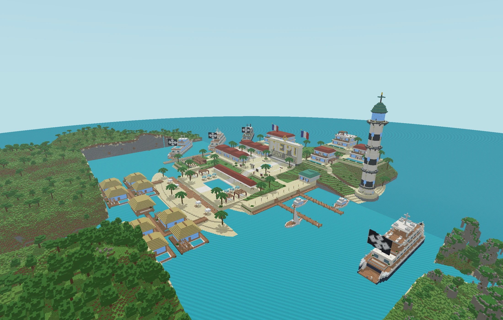

A place you can explore.
A three-dimensional island with selectable landmarks makes the world tangible before a visitor joins.
I’m Reid Okada. I bring a finance background from Ole Miss to a hands-on interest in AI and digital experiences. From a first concept to something you can explore.
↓
Interactive website & community experience
A Minecraft community presented through an interactive island, live player records, and a guided path from discovery to joining the world.
Visit nepomc.com ↗A three-dimensional island with selectable landmarks makes the world tangible before a visitor joins.
Player records and leaderboards connect the website to the people spending time in the world.
Modpack guidance, version information, and an arrival checklist help visitors take the next step.
With a background in finance at the University of Mississippi, I’m interested in how AI and technology can turn ideas into practical, useful experiences. Next up: iRocket.
Incoming
Finance · Ole Miss
Ole Miss Lacrosse · Sigma Pi Beta Mu — Herald
Building and refining digital experiences with AI, including the NEPO website.
Bloomberg Market Concepts — Bloomberg, October 2023
TD Securities Investment Banking Job Simulation — Forage, November 2023
For opportunities, projects,
and good conversations.